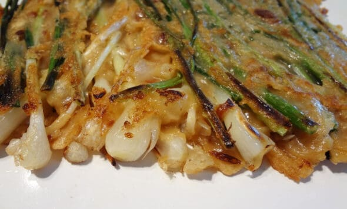

Green Onion Pancake

Tasty and simple!
Pajeon is made with scallion as its promient ingredient. It is a popular Korean food that is easy to make!
Ingredients
- All-purpose flour: The main ingredient for the batter.
- Corn starch: Commonly combined with the all-purpose flour to make the pancake crispy. You can also use potato starch
- Scallions: The star of the show!
- Vegetable oil
- Sugar
- Salt